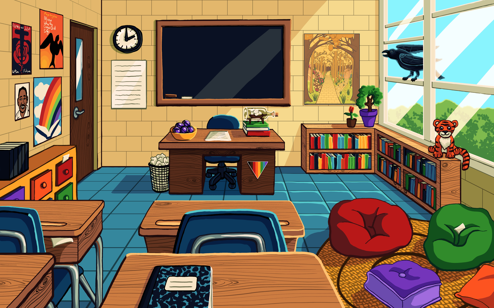

Hi, I'm Erin, and I have too many hobbies
It all started when I was a tiny human who was very bad at talking to people, but who absolutely loved stories and making things. Before I could write, I used to staple pieces of printer paper folded in half together and draw abstract stick figures inside to create my own "books." Once I did learn to write, I just couldn't stop.
I never got away from telling stories through the medium of drawing either. Whether it was colored pencil, charcol, paints, pixels on a screen, or even scuplture, I've always' to create things. In high school, I was on the set crew building sets for the school plays. In college, I went to nerdy conventions with my new friends and dabbled in costume making and papermache weapons.
A List of Most of My Hobbies
but I probably forgot some...
- Creative Writing
- Illustration
- Dungeons and Dragons
- Reading
- Puzzles especially jigsaw
- Baking
- Graphic Design
- Video Games
- Board/Card/Tabletop Games
- Video Games
- Painting
- Movies, TV, Podcasts
- Plays & Musicals
Graphic Design made me hate this
Fast forward twenty-ish years and a degree in illustration, I realized that to make money in either writing or illustration, I would need to freelance, and to make a livable salary freelancing, I would need to be good at talking to people. So instead, I became a Graphic Designer with a pet peeve against colored text. I am now a fully grown human who is bad at talking to people, but who absolutely loves stories and making things.
It all comes back to stories
If I could find through line in all my various interests, it would have to be the stories. They come in many different mediums, but ultimately it all comes back to narrative. Okay, not baking, unless I write a story in icing or something. There's something about exploring other worlds, other perspectives, and endless possibilies, that I find absolutely facisnating.
Illustration

My Favorite Illustration I created for a client
Graphic Design
A design I created for my porfolio